mc світи — ccCraft

mc світи — Еволюція (World1)


mc світи — Статистика

mc світи — Карти

mc світи — Вміст контейнерів

mc світи — Інвентарі
mc моди

IT


Таймлапси


ccCraft таймлапси
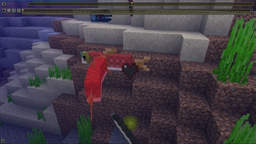
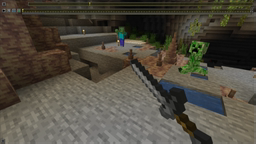
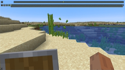
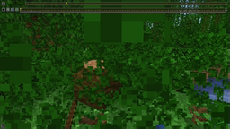
YouTube
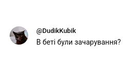
Конфлікт з язєфою

Конфлікт з язєфою — коментатори 3-й сорт
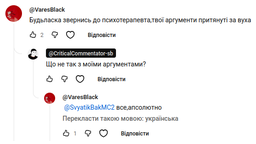
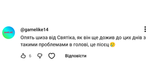

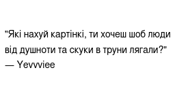
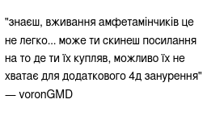
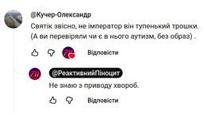
Конфлікт з язєфою — коментатори 2-й сорт
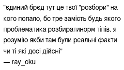
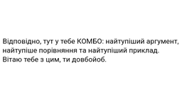
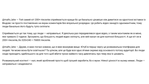
Конфлікт з Одинадцятим
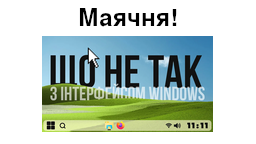